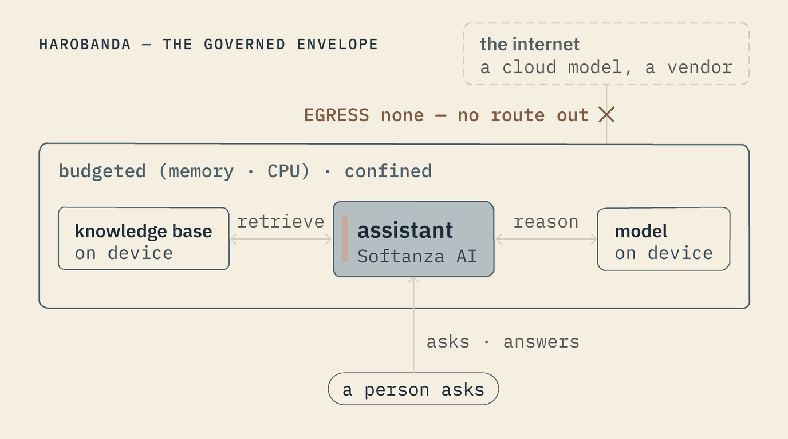
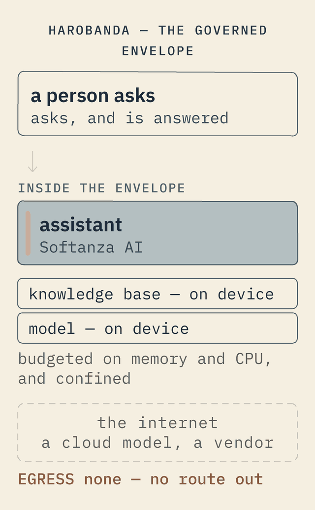

An assistant
A governed knowledge assistant, declared.
Say you want an assistant that answers questions from your own documents — the thing everyone now builds against a cloud model. With Softanza AI it is a few declarations: a knowledge base, a model, and a chat service. What Harobanda adds is the governance the cloud version cannot: the model and the index run on the box; the machine declares no route out, so the box knows no way to send the documents or the questions anywhere; the assistant runs inside its own walls, under a memory and processor ceiling the kernel holds; and the box signs a record of every boot, saying which file it ran. The same assistant that would hand your data to a vendor becomes one you can place in a clinic or a ministry. (A record of each exchange, and a firewall behind the missing route, are not built yet.)
DEFINE MACHINE hub AS ( ... ) -- NETWORK lan, EGRESS none → no route to the outside DEFINE SERVICE assistant AS ( RUN ["/app/assistant"], RESTART always, -- read docs and run the model; no network at all NEEDS [filesystem, inference], MEMORY 2048, CPU 200, -- a ceiling the kernel holds READY "/run/assistant.ready" ) RATIONALE "answers from the org's own knowledge; the box knows no route out"


An agent that has only what it was granted, cannot pass what it was budgeted, knows no route out of the box, and can change the machine only through a new file that is checked before it runs and tried before it is kept — is an agent you can actually deploy.